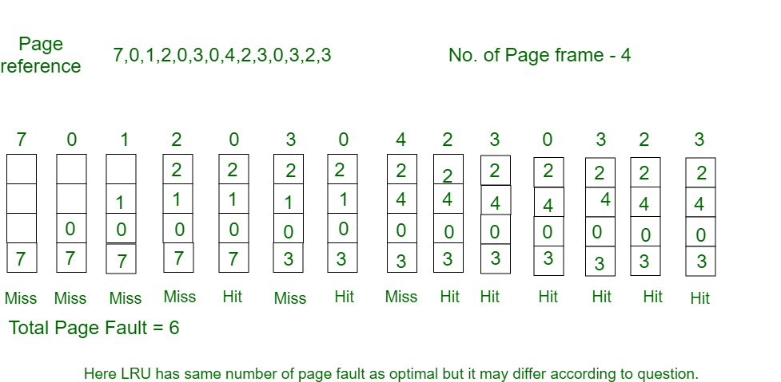

Theory
1) LRU Page Replacement Algorithm is a Greedy algorithm where the page to be replaced is least recently used.
2) The idea is based on locality of reference, the least recently used page is not likely to come again and the pages that have been used most times in the last few instructions will probably be used again and again.
3) LRU works opposite to Optimal Page Replacement Algorithm as LRU Algorithm is dependent on previous requests while the latter is dependent on future requests.
4) To implement LRU, we will maintain a stack to store previous requests. This stack will then be continuously updated accordingly.
Advantages of LRU
- It is free from Belady’s Anamoly.
- Easy to choose page which has faulted and hasn’t been used for a long time.
Disadvantages of LRU
- Too costly.
- Requires high hardware assistance.
- Hard to implement.
Example
- Initially all slots are empty, so when 7 0 1 2 are allocated to the empty slots —> 4 Page faults
- 0 is already their so —> 0 Page fault.
- when 3 came it will take the place of 7 because it is least recently used —>1 Page fault
- 0 is already in memory so —> 0 Page fault.
- 4 will takes place of 1 —> 1 Page Fault
- Now for the further page reference string —> 0 Page fault because they are already available in the memory.